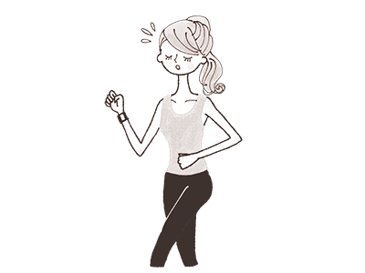
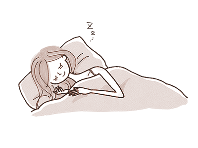
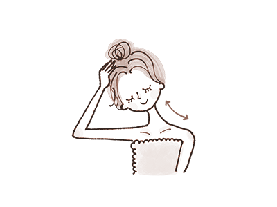

心と体にやさしいお灸
広島健康堂
お灸の気持ちよさと効果を一人でも多くの方に知っていただきたい
そんな想いから生まれた、お灸に特化した鍼灸院です。
お灸について
お灸は一般的にモグサを皮膚の上(ツボ)に置いて燃やし、その温熱刺激によって体調を整える治療技術です。
1400年前に中国から伝わったものですが、その長い歴史の中で日本人に合うように発展し、我が国の健康を支えてきた伝統医療です。
こんなことでお困りではないですか
お悩みをもつ方にお灸治療とセルフケアお灸をご提案いたします。
肩が凝る
ねむれない
お腹や手足が
冷える
生理痛が強い
お腹を壊しやすい
お灸の効果
免疫力がアップ

体に温熱刺激を与えることで、皮膚の下にある筋肉や血管、リンパ節が刺激されます。
細胞が活性化され免疫作用がアップするほか、リンパの流れが改善されるため、むくみの解消にもつながります。
体のさまざまな症状の改善
ツボを刺激することによって、冷え性や肩こり、腰痛、目の疲れ、むくみ、ストレス、不眠などといった体のさまざまな症状の改善が期待できます。
鎮痛・リラックス効果

もぐさの有効成分「シネオール」が強力な消毒・殺菌・鎮静・鎮痛作用などがあります。
この成分が皮膚の表面から内部に浸透していき、痛みを和らげるなどの効果が期待できます。